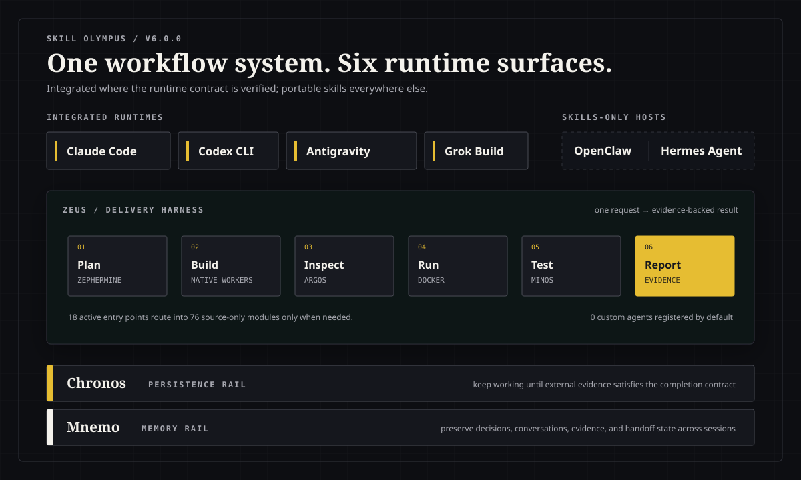

/zeus一文の依頼から、設計、実装、監査、実行環境、テスト、根拠レポートまで進めます。
すべてのホストを同じ水準で扱いません。ランタイム統合を検証済みの4つのCLIと、移植可能なスキルだけを導入する2つのホストを分けています。

Claude Code、Codex CLI、Antigravity CLI、Grok Buildには、ランタイム別の導入、記憶、オーケストレーション契約があります。
OpenClawとHermes Agentには、有効なスキル18個とsource-onlyモジュール76個を導入します。
普段見えるのは18の入口だけです。専門モジュール76個は、依頼に必要なときだけカタログから読み込みます。
/zeus一文の依頼から、設計、実装、監査、実行環境、テスト、根拠レポートまで進めます。
/zephermine実装前に要件、API、QAシナリオ、フロー図を固めます。
/agent-team現在使っているCLIのネイティブワーカーにファイルの担当を割り振り、並列で実装します。
/aphrodite利用者の仕事から、体験設計、実装、実画面の確認までつなげます。
/argos設計成果物と実装を照合し、根拠付きで合否を判定します。
/minosPlaywrightシナリオを実行し、再現した不具合をテストが通るまで直します。
/chronos外部の検証結果が完了条件を満たすまで、一件ずつ作業を続けます。
/mnemo過去の会話と判断を探し、次のセッションが再開できる状態を残します。
スキル文書を読めることと、hooks、記憶、MCP、ネイティブワーカーまで連携することは、別の対応水準です。
スキルとランタイム別アダプターを一緒に導入し、検証します。
ホストのAgent Skillsに、再利用できるスキル本体を導入します。
plugins、hooks、Mnemo、MCP、独自エージェント、4つのCLI専用アダプターについて、同等の対応はうたいません。
標準インストーラーはClaude、Codex、Antigravity、Grokを準備します。OpenClawとHermes Agentには専用のskills-onlyインストーラーを使います。
git clone https://github.com/Dannykkh/skill-olympus.git
cd skill-olympus.\install.batchmod +x install.sh && ./install.sh.\install-openclaw.bat
.\install-hermes.bat
bash ./install-openclaw.sh
bash ./install-hermes.sh